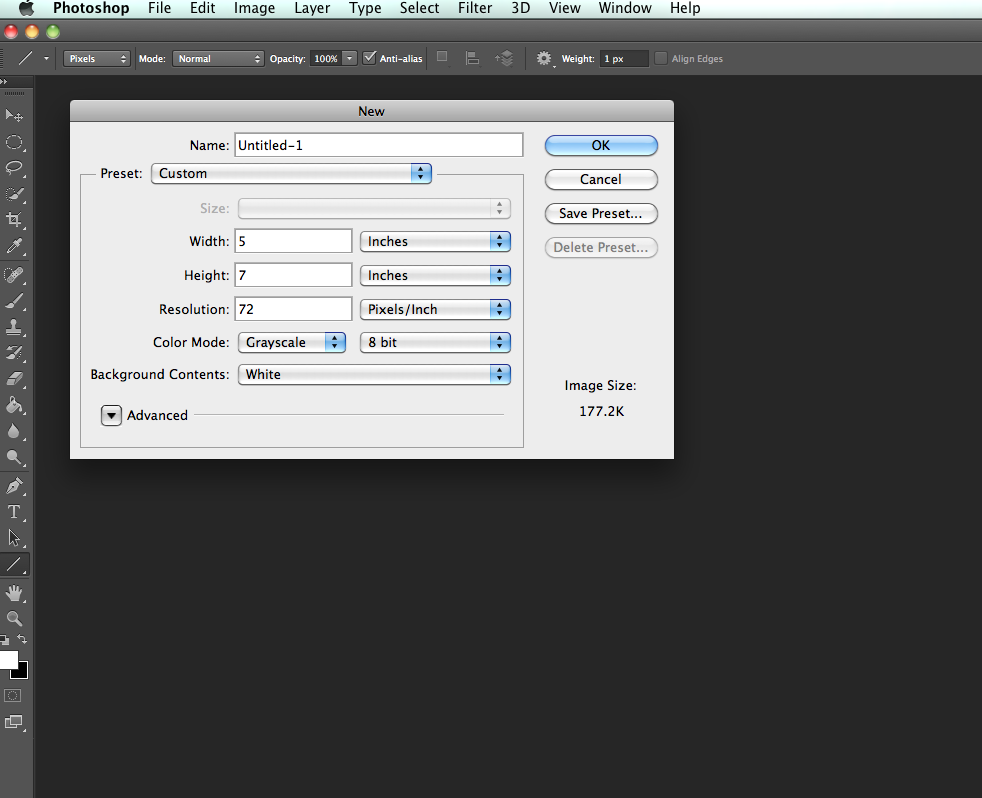

This assignment is simply meant as an exercise in opening Photoshop and playing around. The idea is to get comfortable getting around the program and making marks. I am not expecting masterpieces so don't feel the pressure to make something awesome. The assignment will not be graded, however I do want you to turn in something.
Create a new file in Photoshop - 5 inches by 7 inches at 72 pixels per inch, RGB 8 Bit. You will plug these numbers in in the dialog box that opens after you go to File > New.

Please create a self-portrait using the tools in Photoshop. The image doesn't need to be a selfie of your face, you can create a metaphorical self-portrait that captures something interesting about you. You can alter a photograph, or create an image using the paintbrush, or some combination of both.
As you are working, be sure to save your work often. The default Photoshop document file format will be a .psd which saves your layers and settings. This is a construction file that can be edited and changed whenever you want. You usually won't be turning these files in for grading because D2L has a limit to file sizes, however you will still want to hang on to them for possible future use.
When you are through creating save the file to your computer as a flattened .jpg file format by going to File > SaveAs and changing the format to .jpg. Title the image with your last name and 1st initial of your first name, and the number of the lesson. For example, if I were to save this file I would save it titled BennettC-Assignment1.jpg.
Use the assignment dropbox in D2L to turn in your jpg image. Go to Assessments > Assignments to find the dropbox or use the link in the weekly folder.
If you run into issues or have questions, please ask them on the discussion forum or send me an email through D2L.